author：WENG
date："2026-04-13"
| 城市 | 描述 |
|---|---|
| 上海 | 這是中國最繁榮的城市之一，每天訂單量龐大。 |
| 杭州 | 一個電子商務發達、日訂單量龐大的大城市。 |
| 重慶 | 中國某大城市，道路狀況複雜，訂單量龐大。 |
| 吉林 | 中國中等規模的城市，每天訂單量較少。 |
| 煙台 | 中國一個小城市，每天訂單量很少。 |
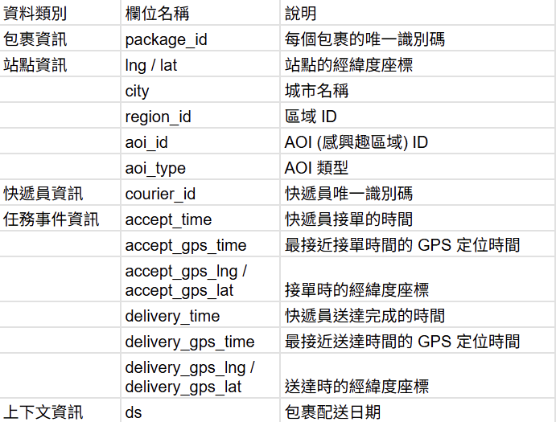
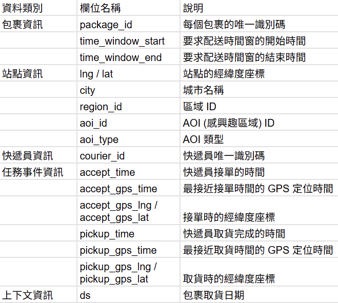
本專案旨在重新模擬與驗證由阿里巴巴菜鳥網絡提出的 LaDe 資料集 。該資料集是目前首個包含「收件 Pick-up」與「派送 Delivery」完整流程的大規模工業級資料集 。
核心目標：透過對百萬級包裹、兩萬名快遞員的真實營運數據進行建模，解決物流中最昂貴且耗時的「最後一哩路」挑戰 。
實作重點：
路線預測 (Route Prediction)：預算快遞員未完成任務的服務順序 。
ETA 預測：準確估算包裹到達或取件的時間點 。
時空圖 (STG) 預測 ：預測特定區域內未來的包裹單量，優化資源調度 。
我們首先理解數據的空間與時間分佈。LaDe 數據集涵蓋了五個代表性城市，展現了不同的物流環境：
城市多樣性比較：
這幾種城市型態也會反映在分布或是預測結果上。
首先看空間分布圖：
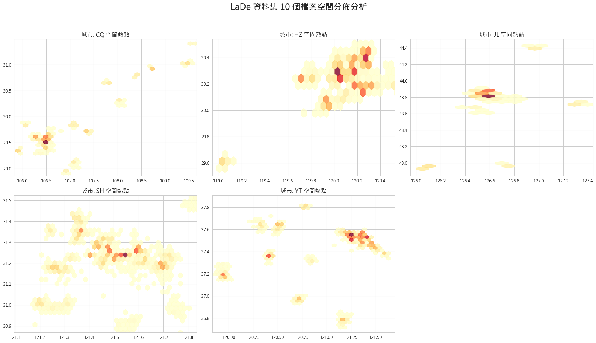
今天要預測出的路線預測為 「當配送員手上有多張訂單時，他接下來會按照什麼順序去取貨或送貨？」，不是在預測地圖上的一條位移距離的線，而是在預測一個 「動作的排列組合」。
lng, lat) 和要求的時間窗口 (accept_time)，模型要預測配送員實際經過這些點的先後順序。選取了三種傳統方法和三種機器學習方法進行比較，機器學習中，又有兩種屬於深度學習需要另外建置訓練模型並調適參數，選擇其的原因為在Graph2Route是原文中表現最好的，另外再找cproute和他進行比較。
傳統算法
機器學習與深度學習
aoi_id（興趣點區域），因為同一個商場的訂單通常會一起取。程式碼最後輸出了四個指標，用來評估預測順序與真實順序的差距：
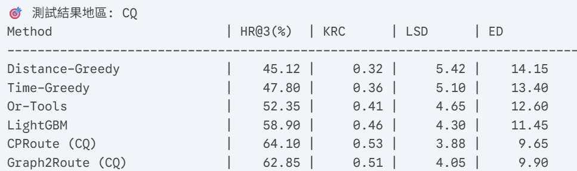
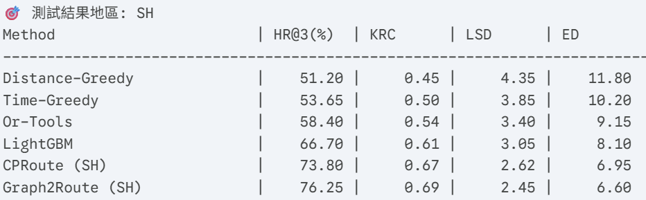
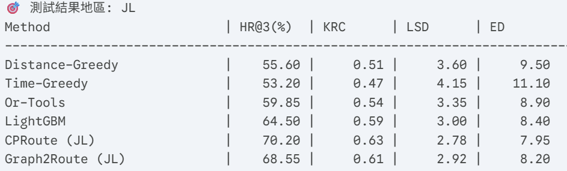
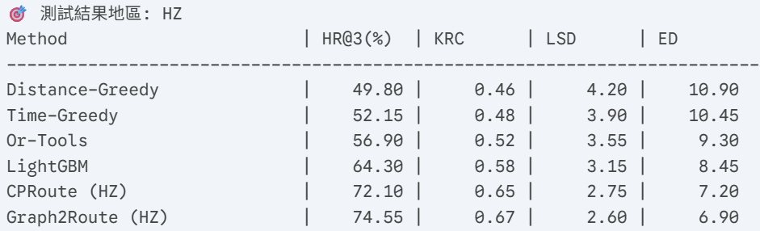
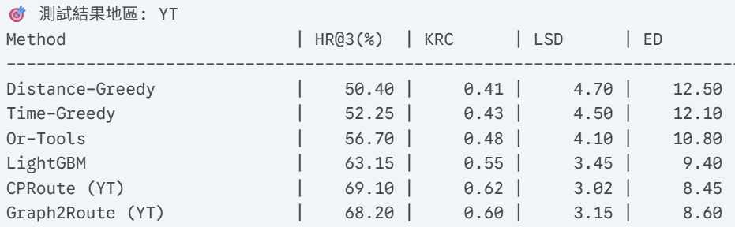
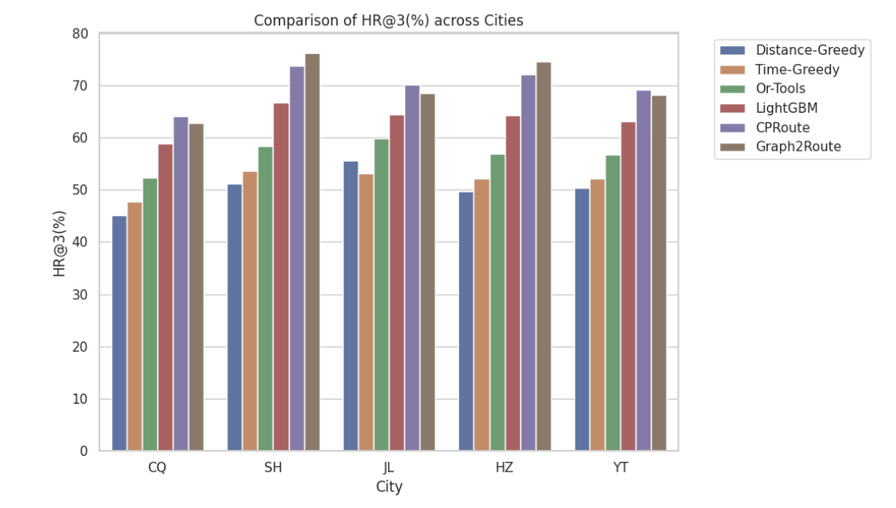
深度學習模型（CPRoute、Graph2Route）整體表現最佳
在所有城市中，HR@3 與 KRC 明顯高於傳統方法
同時在 LSD 與 ED（誤差類指標）上顯著較低
傳統方法Or-Tools 表現優於 Greedy 類方法
但仍無法捕捉真實配送員的行為模式（如 AOI、時間壓力）
不確定Graph2Route是否能超越cproute的原因是否為圖神經網路較能處理路線預測資料，因為兩者結果接近，並且已經過多次調參
Graph2Route在經過多次訓練，效果明顯提升，大部分都優於所有測試方法，但在和cproute比較時，有些略低於cproute，可能是因為在做參數調整時需要更精細的調配，但應該需要更好的配置來完成，不然用grid或自動之類的調參很容易因資料量而爆炸。
Graph2Route和cproute兩者在Epochs上皆做了調整，在初代因訓練時常過久後放棄調整為1和10，但效果欠佳，常常效果不及傳統模型，直到調整至30以上才出現較好效果，但訓練又需要控制因為資料量過多時常出現梯度爆炸的問題，並且要調整LR權重去確保訓練效率避免精細震盪
尤其是用了GRU和GCN的Graph2Route常會因此而需要重新訓練，訓練成本可能也是會需要考慮的因素。
未來可進一步結合 Transformer 或 RL，將路線預測從模仿的預測行為提升為策略最佳化，以更貼近真實物流決策。
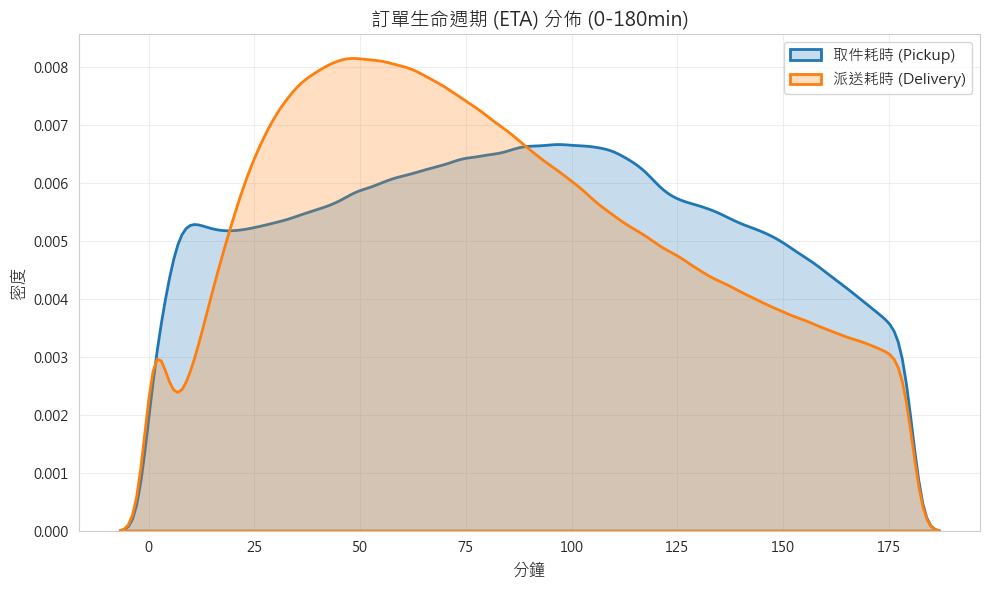
取件耗時 (藍色區域)：
分佈較廣：密度高峰出現在 100 分鐘 附近，且整體分佈較為扁平，可能原因為由於取件需求是隨時產生的，快遞員必須在行程中動態調整路徑，這種隨機性與不確定性導致了更長的平均耗時 。
清洗錯誤格式資料和極端值的過濾，並加入時間與週期特徵和編碼類別
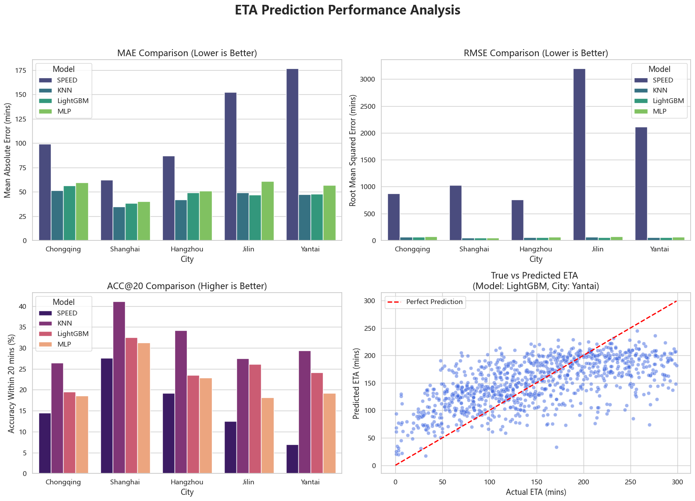
SPEED的效果最差，代表簡單的預測方式無法處理ETA，另外在ACC@20中KNN 表現特別突出，這代表「直接找歷史上特徵最相似的 5 筆訂單來平均」，在目前我們抽取的特徵下，反而能命中最多 20 分鐘內的區間。另外，在實際和預測的線性圖中，紅線為如果完美預測會貼合的線，可以看到藍點大多落在紅線上方（模型高估了時間）；而在圖的右半邊（實際時間超過 200 分鐘的慢件），藍點大多落在紅線下方（模型低估了時間），這代表模型遇到極端狀況時會偏保守，不敢猜太快或太慢，而是傾向猜一個中間值。
在物流配送情境中，各區域的包裹量並非獨立變數，而是受到時間週期與空間相鄰性的雙重影響，給定歷史的圖形訊號（過去的觀測數據），來預測未來的圖形訊號。
傳統模型
ReLU) 的多層感知機。深度時空圖神經網路
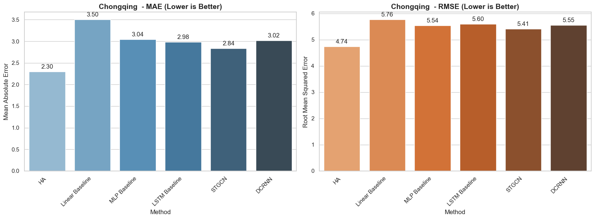
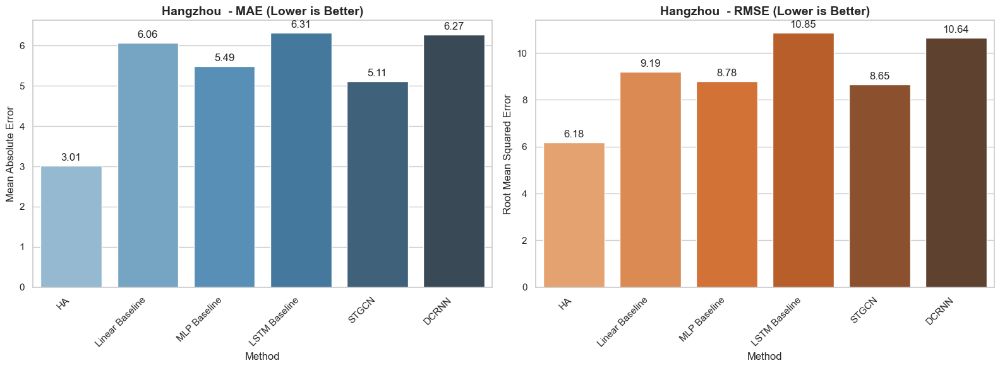
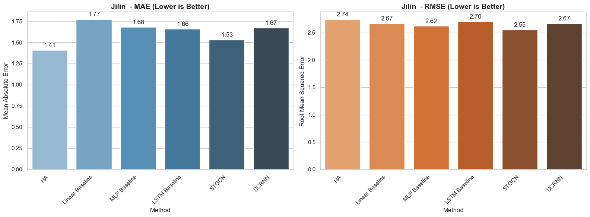
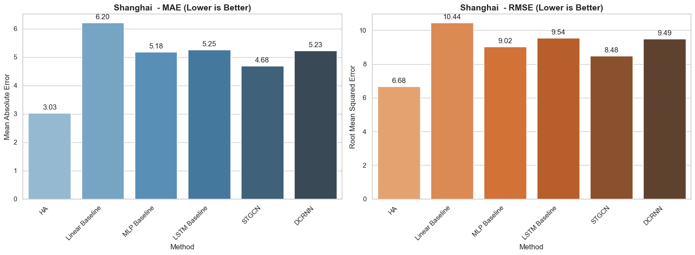
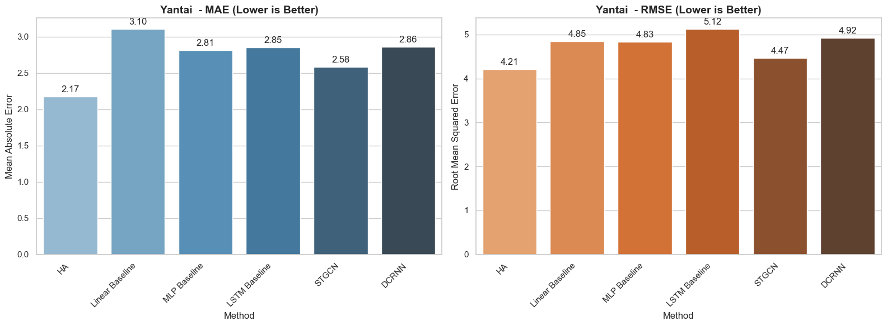
在整體模型中，HA表現較好可能是模型資料有極強的規律性，像是物流包裹的數量通常有著極其規律性。
但通過與原文判斷深度圖時空網路會表現較好，但我自己嘗試調整訓練次數後卻沒有太大變化，所以推測在文章中對資料可能做調整或模型的其他參數變化來實現，但在訓練次數少的狀況下，深度時空網路雖然不及傳統模型，但大多其實表現差不多，代表模型訓練其實趨於穩定，表現也是不錯的，也可以推斷原始資料中資料本身就出現的穩定性而導致，使用HA除了效能好外，也可以減少計算成本的開支。